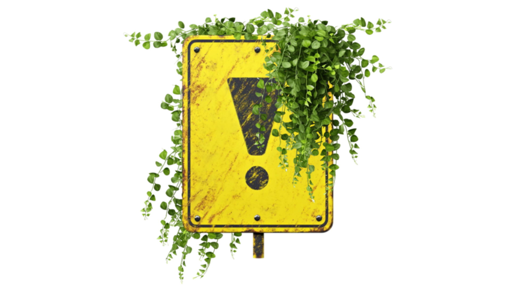

O estranho mundo de Fuji!
Não chegue muito perto! As coisas começam a ficar muito estranhas a partir daqui

How to NOT have a meltdown (Or how to calm yourself from a meltdown)
- Take out your shoes
- take out your sunflower cord
- everything you can take out, TAKE OUT
- Walk
- like, REALLY walk, no strange looks are important now
- search for an alone place
- and WALK
- Stim how much you need
- make sounds, let it all out
- take a deep breath
- look for plants
- look for water
- wash what you can from your body
- and be there with the plants, the earth, the sky, the wind...